This page was generated from
docs/examples/DataSet/Using_doNd_functions_in_comparison_to_Measurement_context_manager_for_performing_measurements.ipynb.
Interactive online version:
 .
.
Using doNd functions in comparison to Measurement context manager for performing measurements
This example notebook contains simple cases in which the doNd utilities of QCoDeS can be used to perform measurements. The doNd functions are generic wrappers of QCoDeS Measurement in zero, one, and two dimensions, as well as the general n dimension. To have a better picture of the difference between the two approaches, we compare doNd and Measurement side-by-side in some cases. In what follows, we shall provide the most basic functionalities and leave more detailed practices
to the user. In particular, we shall not concern about single-point measurements.
Setup before measurement
Here, we call necessary imports for running this notebook, as well as setting up a database, dummy parameters, and creating an experiment object.
[1]:
import os
import time
import numpy as np
import qcodes.logger
from qcodes.dataset import (
LinSweep,
LogSweep,
Measurement,
TogetherSweep,
do1d,
do2d,
dond,
initialise_or_create_database_at,
load_or_create_experiment,
plot_dataset,
)
from qcodes.instrument_drivers.mock_instruments import (
DummyInstrument,
DummyInstrumentWithMeasurement,
)
from qcodes.utils.dataset.doNd import plot
Logging hadn't been started.
Activating auto-logging. Current session state plus future input saved.
Filename : /home/runner/.qcodes/logs/command_history.log
Mode : append
Output logging : True
Raw input log : False
Timestamping : True
State : active
Qcodes Logfile : /home/runner/.qcodes/logs/240701-18003-qcodes.log
[2]:
qcodes.logger.start_all_logging()
Activating auto-logging. Current session state plus future input saved.
Filename : /home/runner/.qcodes/logs/command_history.log
Mode : append
Output logging : True
Raw input log : False
Timestamping : True
State : active
Qcodes Logfile : /home/runner/.qcodes/logs/240701-18003-qcodes.log
[3]:
tutorial_db_path = os.path.join(os.getcwd(), "tutorial_doNd.db")
initialise_or_create_database_at(tutorial_db_path)
First, we set up two dummy instruments to have something to measure. The dmm is set up to generate output depending on the values set on the dac simulating a real experiment.
[4]:
# preparatory mocking of physical setup
dac = DummyInstrument("dac", gates=["ch1", "ch2"])
dmm = DummyInstrumentWithMeasurement("dmm", setter_instr=dac)
We create an experiment for the purpose of this notebook.
[5]:
tutorial_exp = load_or_create_experiment("doNd_VS_Measurement", sample_name="no sample")
1D measurement
Measurement
We perform a one-dimensional sweep over a dac channel to measure our dmm voltages:
[6]:
# Setting up Measurement
meas = Measurement(name="1d_measurement of dmm from dac sweep", exp=tutorial_exp)
meas.register_parameter(dac.ch1)
meas.register_parameter(dmm.v1, setpoints=(dac.ch1,))
meas.register_parameter(dmm.v2, setpoints=(dac.ch1,))
# Running Measurement
with meas.run() as datasaver:
for dac_sweep in np.linspace(0, 1, 10): # sweep points
dac.ch1(dac_sweep)
datasaver.add_result(
(dac.ch1, dac_sweep), (dmm.v1, dmm.v1()), (dmm.v2, dmm.v2())
)
time.sleep(0.01) # Can be removed if there is no intention to see a live plot
dataset1 = datasaver.dataset
Starting experimental run with id: 1.
[7]:
plot_dataset(dataset1)
[7]:
([<Axes: title={'center': 'Run #1, Experiment doNd_VS_Measurement (no sample)'}, xlabel='Gate ch1 (V)', ylabel='Gate v1 (V)'>,
<Axes: title={'center': 'Run #1, Experiment doNd_VS_Measurement (no sample)'}, xlabel='Gate ch1 (V)', ylabel='Gate v2 (mV)'>],
[None, None])
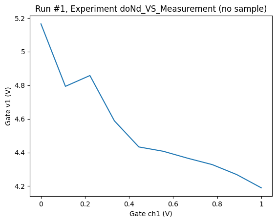
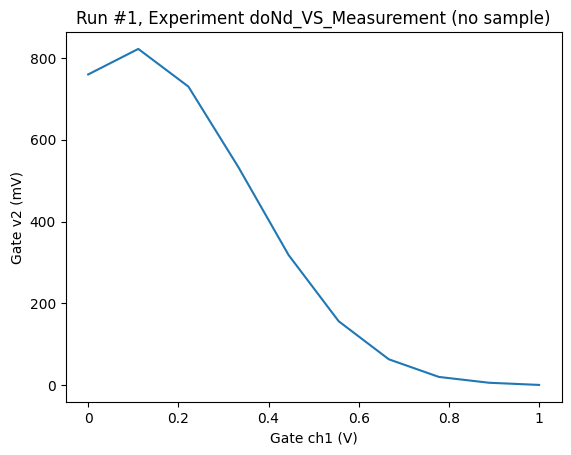
do1d
Now let us use the do1d function to perform the above measurement.
[8]:
# Running masurement with do1d
do1d(dac.ch1, 0, 1, 10, 0.01, dmm.v1, dmm.v2, show_progress=True)
Starting experimental run with id: 2. Using 'qcodes.dataset.do1d'
[8]:
(results #2@/home/runner/work/Qcodes/Qcodes/docs/examples/DataSet/tutorial_doNd.db
---------------------------------------------------------------------------------
dac_ch1 - numeric
dmm_v1 - numeric
dmm_v2 - numeric,
(None,),
(None,))
By comparing do1d to a measurement implemented using the Measurement context manager, we notice that the do1d is significantly shorter, and much less typing is required to perform a basic measurement. This does however come at the cost of loss of flexibility. The doNd functions are therefore great for simple 0d, 1d, and 2d measurements but if you need to implement a more complicated type of measurement, the Measurement context manager is more well suited. However, the general
dond function, which will be explained later in the notebook, is slightly more flexible than the rest of specific-dimensional ones, i.e., do0d, do1d, and do2d.
By default, the doNd functions will not generate a plot of the output. This can be changed in one of two ways. For each individual call to doNd, one can set the value of the keyword argument do_plot to True. Alternatively, one can globally set the value of the setting dataset.dond_plot in the qcodesrc.json configuration file. In the examples below, we will often set do_plot to True to illustrate how the functions work and see the output figures right away. Note that this
setting will be resulting to save the output as png and pdf.
For most use cases, we recommed using Plottr for live plotting. See How to use plottr with QCoDeS for live plotting for an introduction to Plottr.
[9]:
do1d(dac.ch1, 0, 1, 10, 0.01, dmm.v1, dmm.v2, do_plot=True)
Starting experimental run with id: 3. Using 'qcodes.dataset.do1d'
[9]:
(results #3@/home/runner/work/Qcodes/Qcodes/docs/examples/DataSet/tutorial_doNd.db
---------------------------------------------------------------------------------
dac_ch1 - numeric
dmm_v1 - numeric
dmm_v2 - numeric,
(<Axes: title={'center': 'Run #3, Experiment doNd_VS_Measurement (no sample)'}, xlabel='Gate ch1 (V)', ylabel='Gate v1 (V)'>,
<Axes: title={'center': 'Run #3, Experiment doNd_VS_Measurement (no sample)'}, xlabel='Gate ch1 (V)', ylabel='Gate v2 (mV)'>),
(None, None))
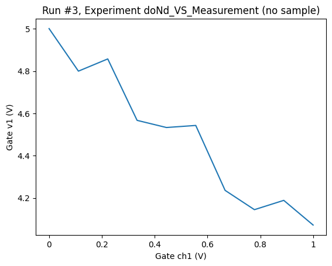
Note that since DummyInstrumentWithMeasurement.v1 and v2 returns a result with simulated random noise, the results are not exactly the same as above.
2D measurement
Now, let us have a two dimensional sweep over gate voltages:
Measurement
[10]:
# Setting up Measurement
meas = Measurement(name="2d_measurement of dmm from dac sweep", exp=tutorial_exp)
meas.register_parameter(dac.ch1)
meas.register_parameter(dac.ch2)
meas.register_parameter(dmm.v1, setpoints=(dac.ch1, dac.ch2))
meas.register_parameter(dmm.v2, setpoints=(dac.ch1, dac.ch2))
# Running Measurement
with meas.run() as datasaver:
for dac1_sweep in np.linspace(-1, 1, 20): # sweep points over channel 1
dac.ch1(dac1_sweep)
for dac2_sweep in np.linspace(-1, 1, 20): # sweep points over channel 2
dac.ch2(dac2_sweep)
datasaver.add_result(
(dac.ch1, dac1_sweep),
(dac.ch2, dac2_sweep),
(dmm.v1, dmm.v1()),
(dmm.v2, dmm.v2()),
)
time.sleep(
0.01
) # Can be removed if there is no intention to see a live plot
dataset2 = datasaver.dataset
Starting experimental run with id: 4.
[11]:
plot_dataset(dataset2)
[11]:
([<Axes: title={'center': 'Run #4, Experiment doNd_VS_Measurement (no sample)'}, xlabel='Gate ch1 (V)', ylabel='Gate ch2 (V)'>,
<Axes: title={'center': 'Run #4, Experiment doNd_VS_Measurement (no sample)'}, xlabel='Gate ch1 (V)', ylabel='Gate ch2 (V)'>],
[<matplotlib.colorbar.Colorbar at 0x7fbce056c450>,
<matplotlib.colorbar.Colorbar at 0x7fbce03dc250>])
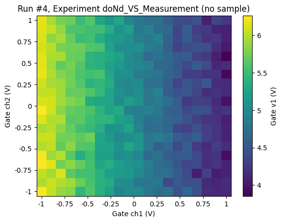
do2d
Again, we use do2d to produce the results for the above measurement. As explained earlier, the results might look different compared to the Measurement section:
[12]:
# Running masurement with do2d
do2d(
dac.ch1,
-1,
1,
20,
0.01,
dac.ch2,
-1,
1,
20,
0.01,
dmm.v1,
dmm.v2,
do_plot=True,
show_progress=True,
)
Starting experimental run with id: 5. Using 'qcodes.dataset.do2d'
[12]:
(results #5@/home/runner/work/Qcodes/Qcodes/docs/examples/DataSet/tutorial_doNd.db
---------------------------------------------------------------------------------
dac_ch1 - numeric
dac_ch2 - numeric
dmm_v1 - numeric
dmm_v2 - numeric,
(<Axes: title={'center': 'Run #5, Experiment doNd_VS_Measurement (no sample)'}, xlabel='Gate ch1 (V)', ylabel='Gate ch2 (V)'>,
<Axes: title={'center': 'Run #5, Experiment doNd_VS_Measurement (no sample)'}, xlabel='Gate ch1 (V)', ylabel='Gate ch2 (V)'>),
(<matplotlib.colorbar.Colorbar at 0x7fbce01cf850>,
<matplotlib.colorbar.Colorbar at 0x7fbce022e150>))
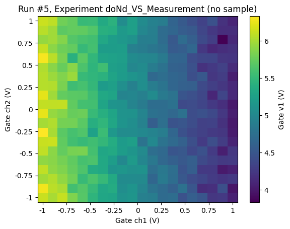
Handling plot, experiment, and measurement_name with doNd
As discussed above the doNd functions can be configured to automatically call plot_dataset and save the output to png and pdf files. It is however also possible to generate these plots using the plot function in the dond module after a measurement is performed.
The doNd functions return a tuple of the dataset obtained in the measurement, a List of Matplotlib axes, and a list of Matplotlib colorbars and plot takes a dataset to be plotted along with keyword arguments that determine if a png or pdf file should be saved. One should therefore pass the first element of the tuple returned by doNd to the plot function.
As with the Measurement context manager, it is possible to pass an explicit Experiment object and measurement_name to the doNd functions. Then, one can easily switch between experiments and modify measurement_name when using the doNd functions.
[13]:
result_1d = do1d(
dac.ch1,
0,
0.25,
10,
0.01,
dmm.v1,
dmm.v2,
exp=tutorial_exp,
measurement_name="1d_measurement of dmm from dac sweep",
)
Starting experimental run with id: 6. Using 'qcodes.dataset.do1d'
[14]:
result_2d = do2d(
dac.ch1,
-0.6,
0.6,
20,
0.01,
dac.ch2,
-0.6,
0.6,
20,
0.01,
dmm.v1,
dmm.v2,
exp=tutorial_exp,
measurement_name="2d_measurement of dmm from dac sweep",
)
Starting experimental run with id: 7. Using 'qcodes.dataset.do2d'
[15]:
plot(result_1d[0], save_pdf=False, save_png=True)
[15]:
(1d_measurement of dmm from dac sweep #6@/home/runner/work/Qcodes/Qcodes/docs/examples/DataSet/tutorial_doNd.db
--------------------------------------------------------------------------------------------------------------
dac_ch1 - numeric
dmm_v1 - numeric
dmm_v2 - numeric,
(<Axes: title={'center': 'Run #6, Experiment doNd_VS_Measurement (no sample)'}, xlabel='Gate ch1 (mV)', ylabel='Gate v1 (V)'>,
<Axes: title={'center': 'Run #6, Experiment doNd_VS_Measurement (no sample)'}, xlabel='Gate ch1 (mV)', ylabel='Gate v2 (mV)'>),
(None, None))
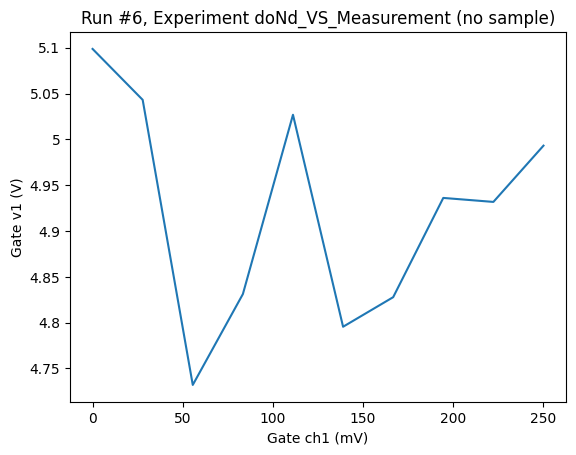
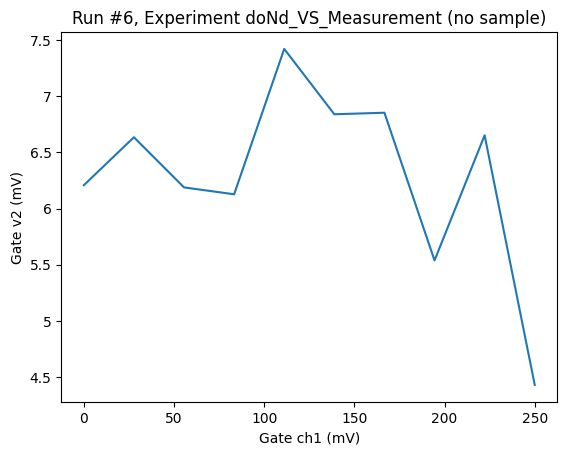
[16]:
plot(result_2d[0], save_pdf=True, save_png=False)
[16]:
(2d_measurement of dmm from dac sweep #7@/home/runner/work/Qcodes/Qcodes/docs/examples/DataSet/tutorial_doNd.db
--------------------------------------------------------------------------------------------------------------
dac_ch1 - numeric
dac_ch2 - numeric
dmm_v1 - numeric
dmm_v2 - numeric,
(<Axes: title={'center': 'Run #7, Experiment doNd_VS_Measurement (no sample)'}, xlabel='Gate ch1 (mV)', ylabel='Gate ch2 (mV)'>,
<Axes: title={'center': 'Run #7, Experiment doNd_VS_Measurement (no sample)'}, xlabel='Gate ch1 (mV)', ylabel='Gate ch2 (mV)'>),
(<matplotlib.colorbar.Colorbar at 0x7fbce0215390>,
<matplotlib.colorbar.Colorbar at 0x7fbcdbe42450>))
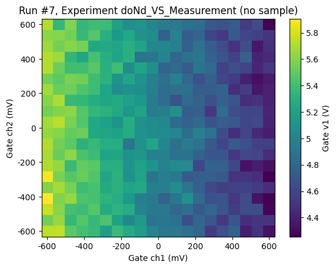
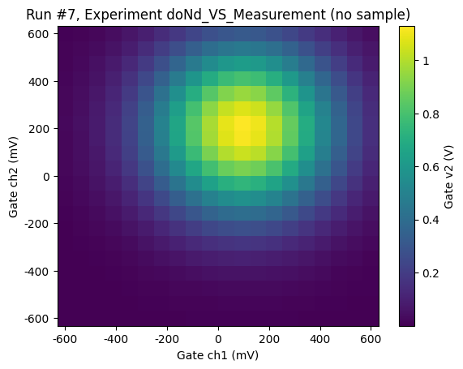
Generalized n-dimensional measurement (dond)
It is possible to use the general n-dimensional implementation in doNd (dond function) for performing measurements, which replaces individual 0, 1, and 2 dimensional functions with slightly different construct arguments. This implementation not only enables users to run higher dimensional measurements (above 2D) but also uses an interface for defining sweep setpoints other than traditional linearly-spaced points. Currently, doNd module has natively implemented linear and logarithmic
setpoints in two sweep classes, i.e., LinSweep, LogSweep and ArraySweep. These classes are using the AbstractSweep interface structure defined in doNd module. Therefore, one can use this interface to create a sweep class with custom setpoints and use instances of that class in the dond construct for measurements. This could bring significant flexibility using dond over other specific-dimensional doNds.
Below, we provide an example of how to replace the above-mentioned do1d and do2d with dond. Since individual doNds are only limited to linearly-spaced sweep points, we use the existing LinSweep class instances with the structure shown below:
[17]:
sweep_1 = LinSweep(dac.ch1, -1, 1, 20, 0.01)
sweep_2 = LinSweep(dac.ch2, -1, 1, 20, 0.01)
Now, we can simply pass the created linear above sweep instances for measurements:
[18]:
dond(
sweep_1, dmm.v1, dmm.v2, do_plot=True, show_progress=True
) # replacing above do1d example
Starting experimental run with id: 8. Using 'qcodes.dataset.dond'
[18]:
(results #8@/home/runner/work/Qcodes/Qcodes/docs/examples/DataSet/tutorial_doNd.db
---------------------------------------------------------------------------------
dac_ch1 - numeric
dmm_v1 - numeric
dmm_v2 - numeric,
(<Axes: title={'center': 'Run #8, Experiment doNd_VS_Measurement (no sample)'}, xlabel='Gate ch1 (V)', ylabel='Gate v1 (V)'>,
<Axes: title={'center': 'Run #8, Experiment doNd_VS_Measurement (no sample)'}, xlabel='Gate ch1 (V)', ylabel='Gate v2 (mV)'>),
(None, None))
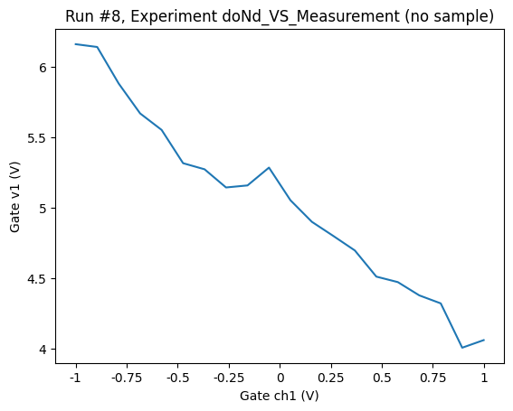
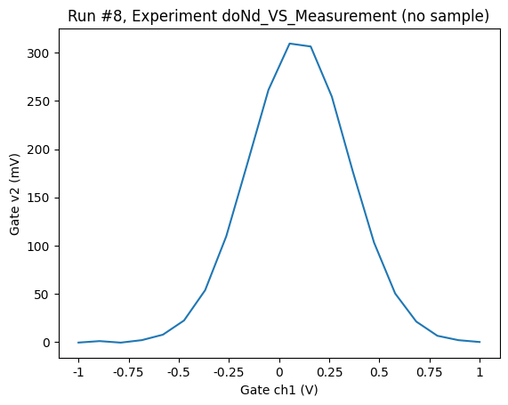
[19]:
dond(
sweep_1, sweep_2, dmm.v1, dmm.v2, do_plot=True, show_progress=True
) # replacing above do2d example
Starting experimental run with id: 9. Using 'qcodes.dataset.dond'
[19]:
(results #9@/home/runner/work/Qcodes/Qcodes/docs/examples/DataSet/tutorial_doNd.db
---------------------------------------------------------------------------------
dac_ch1 - numeric
dac_ch2 - numeric
dmm_v1 - numeric
dmm_v2 - numeric,
(<Axes: title={'center': 'Run #9, Experiment doNd_VS_Measurement (no sample)'}, xlabel='Gate ch1 (V)', ylabel='Gate ch2 (V)'>,
<Axes: title={'center': 'Run #9, Experiment doNd_VS_Measurement (no sample)'}, xlabel='Gate ch1 (V)', ylabel='Gate ch2 (V)'>),
(<matplotlib.colorbar.Colorbar at 0x7fbcdbc7c450>,
<matplotlib.colorbar.Colorbar at 0x7fbcdbccb710>))
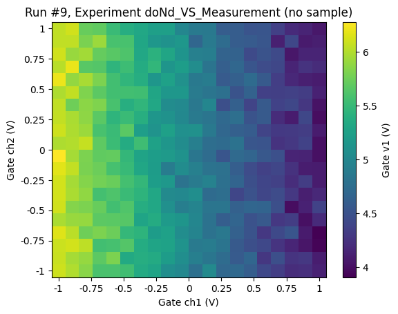
Note that the results could be different from what we have seen before for the same reason explained earlier.
Let’s try the above examples with logarithmic sweeps, instead:
[20]:
sweep_3 = LogSweep(dac.ch1, -1, 1, 20, 0.01)
sweep_4 = LogSweep(dac.ch2, -1, 1, 20, 0.01)
[21]:
dond(sweep_3, dmm.v1, dmm.v2, show_progress=True, do_plot=True) # 1d
Starting experimental run with id: 10. Using 'qcodes.dataset.dond'
[21]:
(results #10@/home/runner/work/Qcodes/Qcodes/docs/examples/DataSet/tutorial_doNd.db
----------------------------------------------------------------------------------
dac_ch1 - numeric
dmm_v1 - numeric
dmm_v2 - numeric,
(<Axes: title={'center': 'Run #10, Experiment doNd_VS_Measurement (no sample)'}, xlabel='Gate ch1 (V)', ylabel='Gate v1 (V)'>,
<Axes: title={'center': 'Run #10, Experiment doNd_VS_Measurement (no sample)'}, xlabel='Gate ch1 (V)', ylabel='Gate v2 (mV)'>),
(None, None))
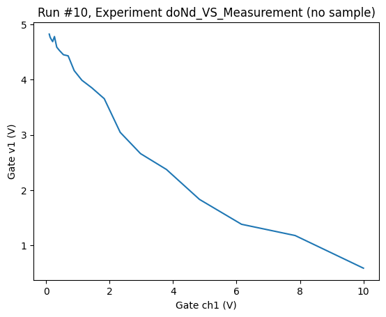
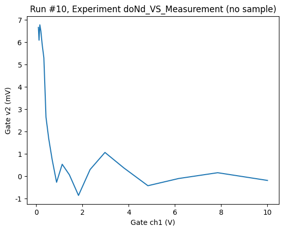
[22]:
dond(sweep_3, sweep_4, dmm.v1, dmm.v2, show_progress=True, do_plot=True) # 2d
Starting experimental run with id: 11. Using 'qcodes.dataset.dond'
[22]:
(results #11@/home/runner/work/Qcodes/Qcodes/docs/examples/DataSet/tutorial_doNd.db
----------------------------------------------------------------------------------
dac_ch1 - numeric
dac_ch2 - numeric
dmm_v1 - numeric
dmm_v2 - numeric,
(<Axes: title={'center': 'Run #11, Experiment doNd_VS_Measurement (no sample)'}, xlabel='Gate ch1 (V)', ylabel='Gate ch2 (V)'>,
<Axes: title={'center': 'Run #11, Experiment doNd_VS_Measurement (no sample)'}, xlabel='Gate ch1 (V)', ylabel='Gate ch2 (V)'>),
(<matplotlib.colorbar.Colorbar at 0x7fbcdb9878d0>,
<matplotlib.colorbar.Colorbar at 0x7fbcdb9cc450>))
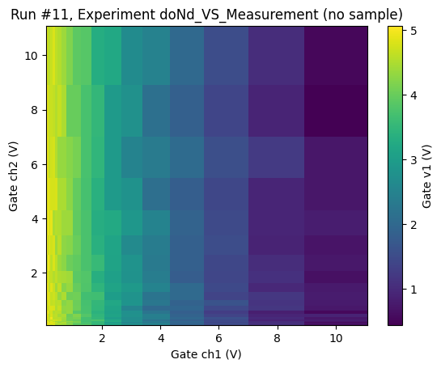
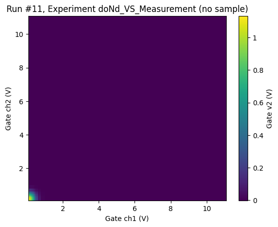
The ArraySweep can be used when you’d like to sweep a parameter with values of a more sophisticated array. Once you create the array, can be a numpy array or a sequence of values (list or tuple), then just pass it to dond wrapped in the ArraySweep, and that’s it.
dond with multiple measurements (multiple datasets)
If one wants to split measurement results into separate datasets, dond can do it with a small change in passing the arguments in this function. The user needs to group measurement parameters and their callables in sequences like lists or tuples, then dond will generate an independent measurement per group, and therefore, one dataset will be created for each group. It should be noted that all groups will share sweep setpoints, Experiment object, measurement_name, as well as
additional_setpoints, if used.
Below, we provide a simple example how to create multiple datasets from dond:
[23]:
result = dond(sweep_1, sweep_2, [dmm.v1], [dmm.v2], do_plot=True, show_progress=True)
Starting experimental run with id: 12. Using 'qcodes.dataset.dond'
Starting experimental run with id: 13. Using 'qcodes.dataset.dond'
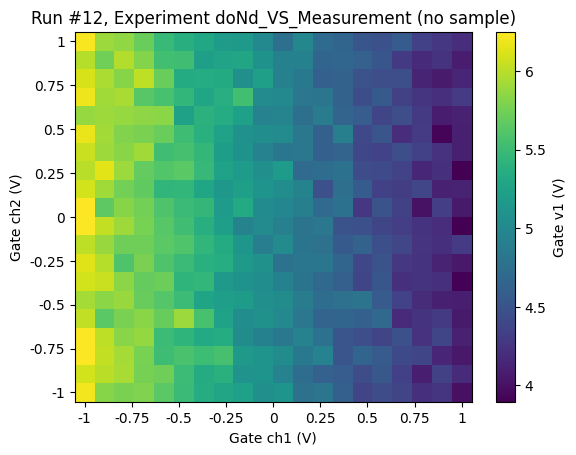
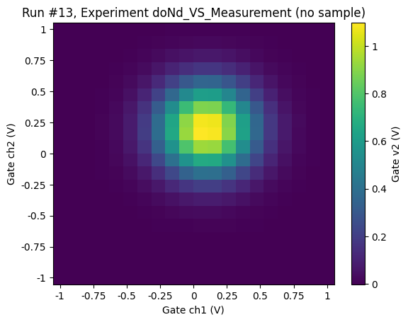
In this case, the output of dond is a triplet of tuples, which the first element of the triplet (result[0]) is the generated datasets:
[24]:
dataset_v1 = result[0][0] # dataset for the first group
dataset_v2 = result[0][1] # dataset for the second group
Sweep multiple parameters in parallel
Sometimes it may be required to measure a parameter while sweeping two or more parameters at the same time. dond supports this by using the special construct TogetherSweep to take a list of sweeps to be performed at the same time and passing that to dond. Note that this required you to use sweeps of the same length for all components in a TogetherSweep. In the example below we measure as a function of both channels of the DAC.
[25]:
sweep_1 = LinSweep(dac.ch1, -1, 1, 20, 0.01)
sweep_2 = LinSweep(dac.ch2, -1, 1, 20, 0.01)
together_sweep = TogetherSweep(sweep_1, sweep_2)
[26]:
result = dond(together_sweep, dmm.v1, dmm.v2, do_plot=True, show_progress=True)
Starting experimental run with id: 14. Using 'qcodes.dataset.dond'
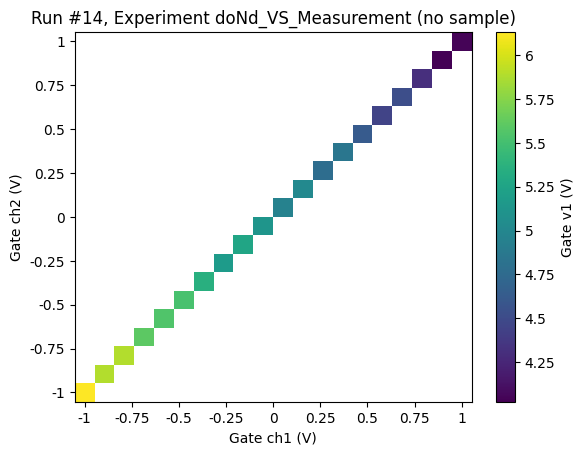
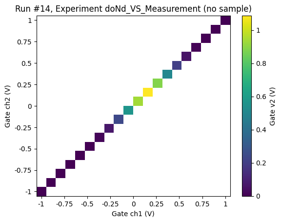
Note that by default this means that we will create one or more datasets where the dependent parameter depends on all the parameters in the TogetherSweep e.g. Gate V2 depends on both Gate ch1 and Gate ch2 in the example above.
Sometimes this may not be what you want but rather you are performing two or more measurements independently and want the datasets to reflect this. E.g. imagine that you are performing experiments on two different physical systems where you know that dmm.v1 only depends on dac.ch1 and dmm.v2 only depends on dac.ch2. In these cases it is possible to use the argument dataset_dependencies to tell do_nd how the dependent parameters map to independent parameters as in the
example below. Note that there is no way for QCoDeS to verify these dependencies are correct for your physical system and is is your responsibility to ensure that they are.
[27]:
result = dond(
together_sweep,
dmm.v1,
dmm.v2,
do_plot=True,
show_progress=True,
dataset_dependencies={
"ds1": (dac.ch1, dmm.v1),
"ds2": (dac.ch2, dmm.v2),
},
)
Starting experimental run with id: 15. Using 'qcodes.dataset.dond'
Starting experimental run with id: 16. Using 'qcodes.dataset.dond'
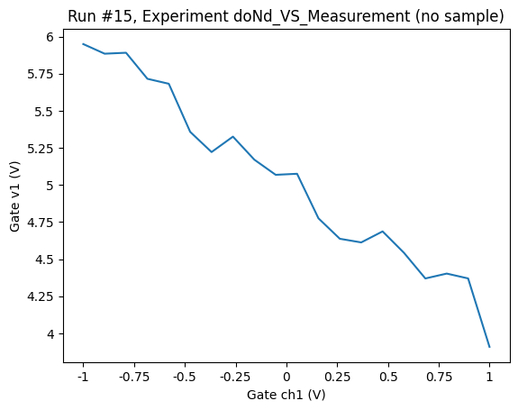
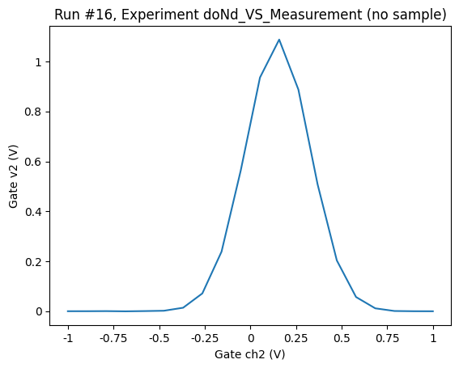
Getting a value after setting it.
Looking at the examples of using the measurement context manager above you can see that we typically store the value set on the instrument as the setpoint. For most instruments we know that once the instrument has been set to a given value that is the actual value applied. However for some instruments it may not be able to reach exactly the value specified and one may want to ask the instrument for the exact value acchived. With the measurement context manger this is relatively simple to implement as seen in the example below.
[28]:
# Setting up Measurement
meas = Measurement(name="1d_measurement of dmm from dac sweep", exp=tutorial_exp)
meas.register_parameter(dac.ch1)
meas.register_parameter(dmm.v1, setpoints=(dac.ch1,))
meas.register_parameter(dmm.v2, setpoints=(dac.ch1,))
# Running Measurement
with meas.run() as datasaver:
for dac_sweep in np.linspace(0, 1, 10): # sweep points
dac.ch1(dac_sweep)
datasaver.add_result(
(dac.ch1, dac.ch1()), (dmm.v1, dmm.v1()), (dmm.v2, dmm.v2())
)
time.sleep(0.01) # Can be removed if there is no intention to see a live plot
dataset1 = datasaver.dataset
Starting experimental run with id: 17.
To do the same using doNd we can make use of the get_after_set argument to the Sweep as shown here. To illustrate the difference we make use of the console_level and filter_instrument context managers to show log debug messages from the mock dac instrument. See this notebook here for more examples of logging and how it can be controlled.
[29]:
set_and_get_sweep = LinSweep(dac.ch1, -1, 1, 11, 0.01, get_after_set=True)
set_only_sweep = LinSweep(dac.ch1, -1, 1, 11, 0.01, get_after_set=False)
As we can see below when get_after_set is False (the default) we do not perform a get command on the dac.ch1 parameter.
[30]:
with qcodes.logger.console_level("DEBUG"):
with qcodes.logger.filter_instrument(dac):
dond(set_only_sweep, dmm.v1, dmm.v2)
Starting experimental run with id: 18. Using 'qcodes.dataset.dond'
But when we set get_after_set to True we perform a get after each set of the parameter and we store the output returned from get rather than the set value as the setpoint value in the dataset.
[31]:
with qcodes.logger.console_level("DEBUG"):
with qcodes.logger.filter_instrument(dac):
dond(set_and_get_sweep, dmm.v1, dmm.v2)
Starting experimental run with id: 19. Using 'qcodes.dataset.dond'
Actions in dond
All doNd functions except do0d support passing what we call them actions. These actions are Callables, which can be used, for instance, if a user wants to perform some functions call before/ after setting a setpoint parameter. Here, we only demonstrate post_actions in dond because they are part of sweep classes rather than the dond function.
Let’s walk through an example. We first define simple functions that only print some messages:
[32]:
def action_1():
print("dac channel 1 is set")
print("********************")
def action_2():
print("dac channel 2 is set")
print("++++++++++++++++++++")
Now, we pass these functions into two sweep instances (note that actions should always be placed in a sequence like a list, even if there is only one Callable):
[33]:
sweep_5 = LinSweep(dac.ch1, 0, 1, 2, 0.01, [action_1])
sweep_6 = LinSweep(dac.ch2, 0, 1, 2, 0.01, [action_2])
We intentionally chose two setpoints for each sweep instance to not populate our notebook with too many prints. Every time the parameter of sweep_5 and sweep_6 are set to their setpoint values, action_1 and action_2 will be called, respectively. Let’s run a dond with these sweeps (here, we are only interested in actions, so we do not show the progress bar and plots):
[34]:
dond(sweep_5, sweep_6, dmm.v1)
Starting experimental run with id: 20. Using 'qcodes.dataset.dond'
dac channel 1 is set
********************
dac channel 2 is set
++++++++++++++++++++
dac channel 2 is set
++++++++++++++++++++
dac channel 1 is set
********************
dac channel 2 is set
++++++++++++++++++++
dac channel 2 is set
++++++++++++++++++++
[34]:
(results #20@/home/runner/work/Qcodes/Qcodes/docs/examples/DataSet/tutorial_doNd.db
----------------------------------------------------------------------------------
dac_ch1 - numeric
dac_ch2 - numeric
dmm_v1 - numeric,
(None,),
(None,))
If only inner actions between the outer loop and the inner loop are needed, then we only pass those actions into the outer-loop sweep object:
[35]:
def action_wait():
print("wait after setting dac channel 1")
print("++++++++++++++++++++++++++++++++")
[36]:
sweep_5 = LinSweep(dac.ch1, 0, 1, 2, 0.01, [action_1, action_wait])
sweep_6 = LinSweep(dac.ch2, 0, 1, 2, 0.01)
[37]:
dond(sweep_5, sweep_6, dmm.v1)
Starting experimental run with id: 21. Using 'qcodes.dataset.dond'
dac channel 1 is set
********************
wait after setting dac channel 1
++++++++++++++++++++++++++++++++
dac channel 1 is set
********************
wait after setting dac channel 1
++++++++++++++++++++++++++++++++
[37]:
(results #21@/home/runner/work/Qcodes/Qcodes/docs/examples/DataSet/tutorial_doNd.db
----------------------------------------------------------------------------------
dac_ch1 - numeric
dac_ch2 - numeric
dmm_v1 - numeric,
(None,),
(None,))
These actions can be extremely useful in actual measurements that utilize dond. For example, If a user wants to run syncing the oscillator of two MFLI lockins after setting a frequency setpoint or starting an arbitrary waveform generator (AWG) upon sweeping a parameter, these functions can be triggered on instruments using the mentioned actions.